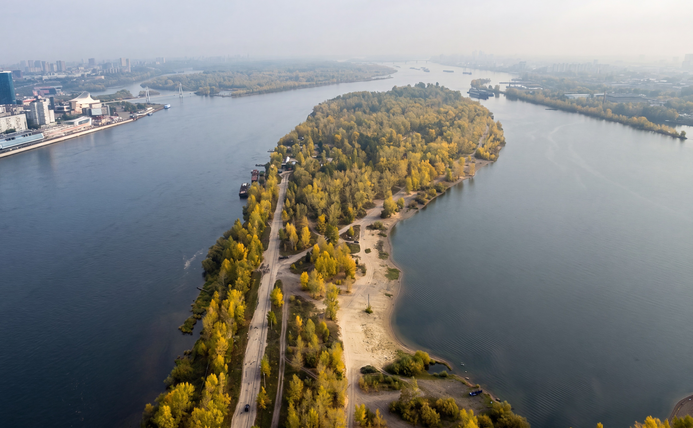
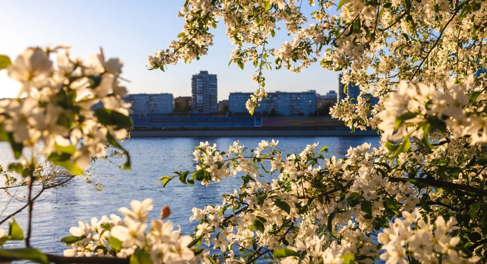
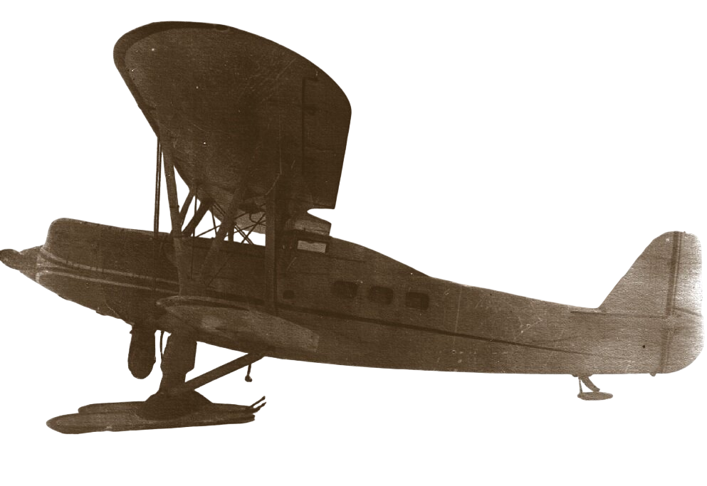
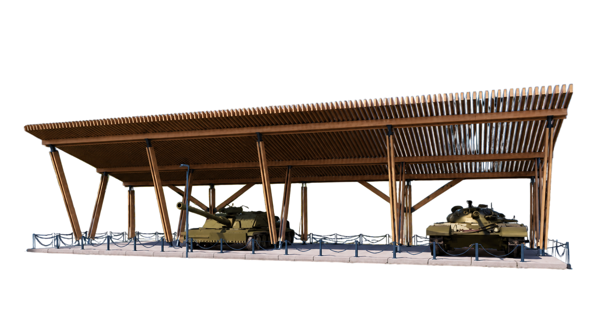
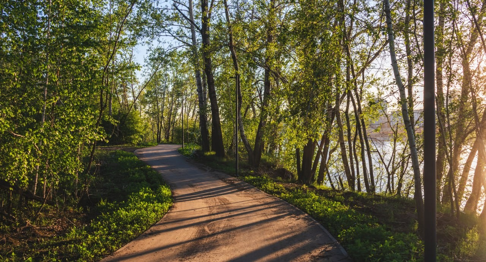

СЕРЕБРЯНЫЙ ЛОГ
Пространство, где дикая природа сочетается с удобной инфраструктурой для прогулок всей семьёй.

Когда-то здесь приземлялись
гидросамолёты. Сегодня — одно из самых
атмосферных мест для прогулок в городе
Место, где история авиации встречается с современными прогулочными маршрутами вдоль Енисея.

ВИДЫ НА ЕНИСЕЙ

В 1930-х годах остров был одним из крупнейших гидроаэропортов страны. Отсюда начинались полёты на Север, а Красноярск стал важным центром освоения Арктики.

В 1930-х годах остров был одним из крупнейших гидроаэропортов страны. Отсюда начинались полёты на Север, а Красноярск стал важным центром освоения Арктики.

Откройте другие знаковые места Красноярска,
которые находятся рядом.
Пространство, где дикая природа сочетается с удобной инфраструктурой для прогулок всей семьёй.

Один из крупнейших экопарков России с десятками маршрутов для прогулок, спорта и походов.

Национальный парк, где величественные скалы поднимаются из сибирской тайги, а каждый маршрут становится путешествием.
Всё необходимое, чтобы легко добраться и насладиться видами
Острова МолоковаДо острова можно доехать по Коммунальному мосту. Рядом с визит-центром оборудована большая парковка на 350 автомобилей
До остановки «Остров Отдыха» следуют городские маршруты. Далее — пешая прогулка около 900 метров до визит-центра
Сделайте первую остановку частью впечатления — загляните в визит-центр острова Молокова, где можно узнать о маршрутах, оставить вещи и удобно подготовиться к прогулке
Ежедневно: 09:00–21:00